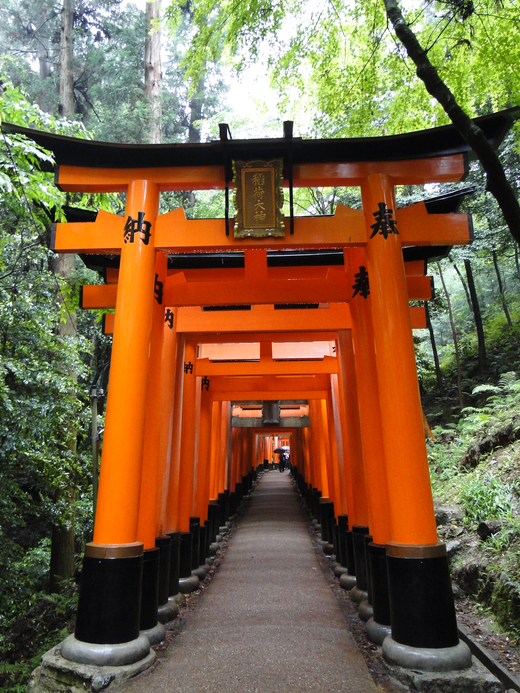
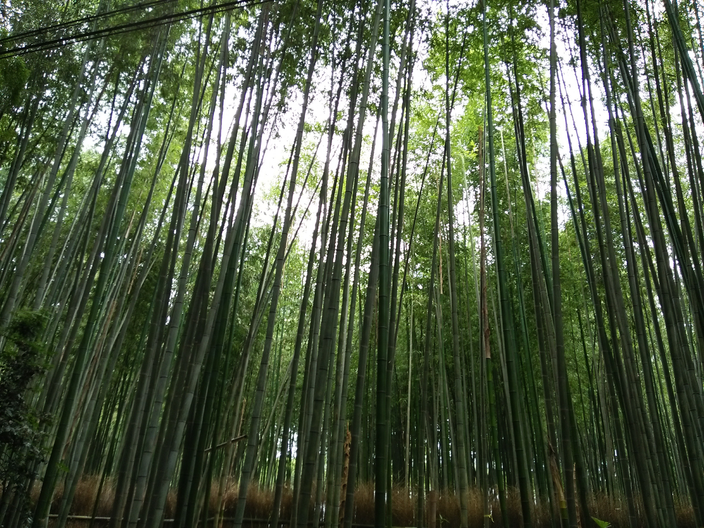

Take the
scenic path.
Walk beneath bright red torii gates, look up through a canopy of bamboo, and follow narrow streets toward hillside temples. Kyoto gives you plenty of reasons to slow down and explore on foot. Leave room in your day for a tea break and the places you notice along the way.
Find things to do
Follow the red gates
At Fushimi Inari Taisha, rows of vermilion gates lead into the wooded slopes of Mount Inari. The repeated gateways make even a short walk feel memorable, with flashes of green between the pillars. Look for the shrine's fox statues as you explore, and give yourself time to enjoy the details along the path.
Explore the official Fushimi Inari guide
A morning among bamboo
Head west to Arashiyama for bamboo that stretches high above the path. The green stalks and filtered light give this part of Kyoto a different feel from the city streets. After the grove, continue toward Togetsukyo Bridge for river views, or spend more time exploring the area's temple gardens. An early start can help you enjoy the popular paths before they get busy.
Read Kyoto's guide to exploring the area